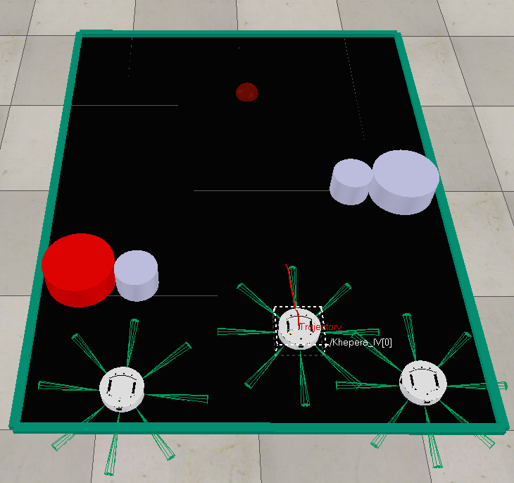
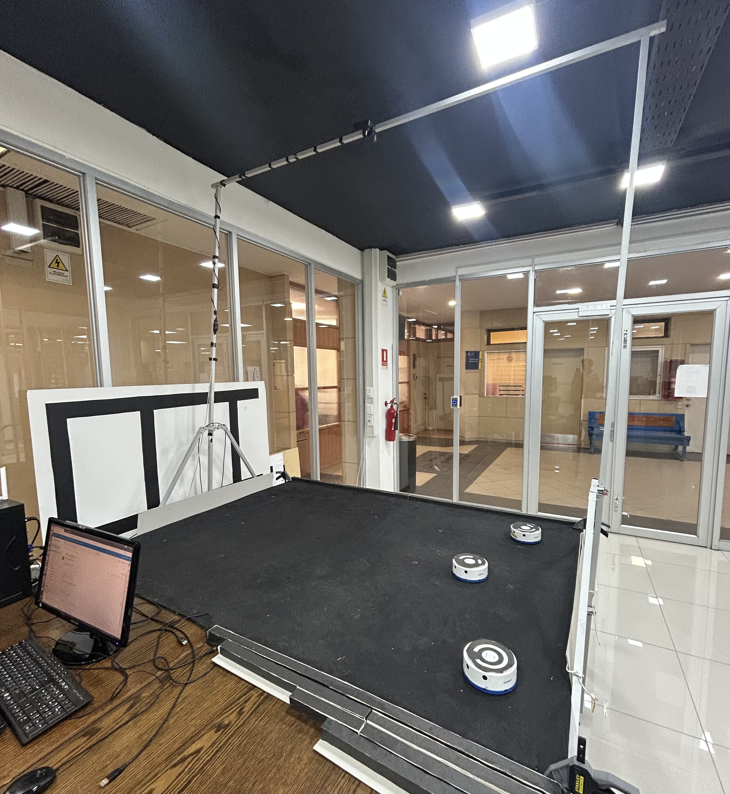

Collective motion.
Cooperative formation control of mobile robots.

OVERVIEW
1.1 / SCIENTIFIC CONTEXT
From simulation to reality.
From individual autonomy to collective motion.
Autonomous mobile robotics traditionally focuses on the ability of a single robot to perceive its environment, make decisions and navigate towards a given objective. Multi-robot systems extend this problem to a group of autonomous agents whose individual actions must contribute to a common task.
Rather than relying on a single robotic platform, distributing a mission among several robots can offer advantages in terms of spatial coverage, operational flexibility, scalability and fault tolerance. These properties make multi-robot systems particularly relevant to applications such as environmental exploration, search and rescue, industrial logistics and autonomous surveillance.
However, increasing the number of robots also introduces new challenges. Each agent operates with its own physical constraints, available measurements and control inputs, while its behaviour influences the evolution of the entire system. The central problem is therefore no longer limited to individual navigation, but extends to coordination, information exchange and collective decision-making.
Formation control in multi-robot systems.
Formation control is a particular branch of multi-agent control in which a group of robots is required to establish and maintain a predefined spatial configuration while moving through an environment.
Unlike independent trajectory tracking, where each robot follows its own reference, formation control introduces geometric relationships between agents. The motion of one robot can consequently affect the control objectives of the others.
Several approaches can be used to address this problem, including behaviour-based control, virtual structures and leader-follower architectures. In the latter, one robot acts as a reference for the remaining agents, which adjust their motion to maintain desired relative positions.
This architecture provides a framework for investigating how individual control laws, relative positioning and information exchange can generate coordinated group motion.
Leader-follower
The leader provides a moving reference. Each follower adjusts its motion to maintain a desired relative position.
APPROACH INVESTIGATED IN THIS PROJECTTowards experimental validation.
Although formation control strategies can be developed and evaluated in simulation, their implementation on physical robots introduces additional engineering challenges. Measurement uncertainties, communication delays, actuator limitations and environmental disturbances can affect the behaviour of the collective system.
Experimental validation is therefore essential to assess how theoretical control strategies perform under real operating conditions.


Within this context, the research internship conducted at the Artificial Intelligence Laboratory of the Pontificia Universidad Católica de Valparaíso focused on the implementation and experimental investigation of leader-follower formation control strategies using a group of three Khepera IV mobile robots.
The project lies at the intersection of automatic control, embedded software, distributed robotic systems and experimental robotics, with the objective of connecting theoretical coordination strategies to their physical implementation.
RESEARCH BACKGROUND
Building on previous research.
EXPERIMENTAL PLATFORM
Inside the robotic system.
PERSONAL CONTRIBUTIONS
Making the system work.
CONTROL STRATEGIES
Engineering collective motion.
EXPERIMENTAL RESULTS
Beyond the simulation.
CONCLUSION